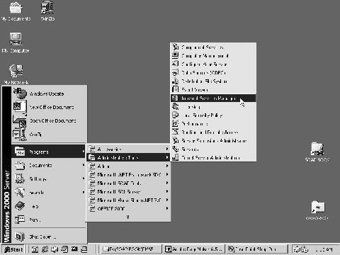
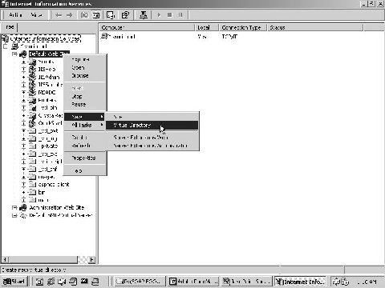
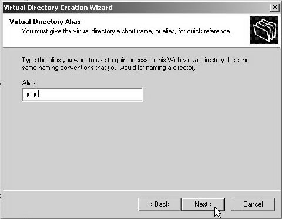
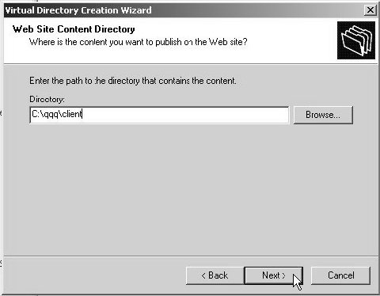
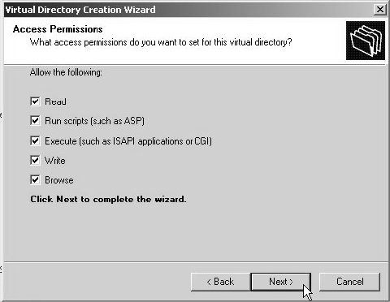
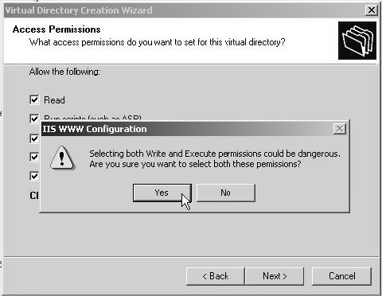
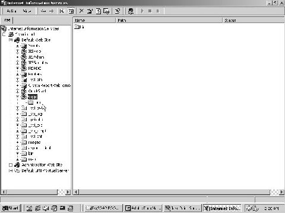

11
ASP.Net WebServices
The very purpose of this chapter
is to introduce the use of complex regular expressions, to specify the content
that should be selected in an HTML file. People have invested millions of
dollars in building the html infrastructure. Hence, it cannot be simply wished
away.
An html file could contain stock
prices, which needs to be extracted with minimal effort. Besides, there are web sites like Barnes and
Noble or Amazon, which run a bookshop online.
These servers contains a script
written in any scripting language, which accepts a parameter, such as- an ISBN
number, and retrieves a book that tallies with this number, from its database.
Thus, it is essential to command the ability to pass parameters to a program,
which is running on the web server. The custom extensions are one of the
various ways of using the already existent infrastructure.
This modus operandi is termed as
screen or html scrapping, wherein, the contents of an html file are accessed,
and the values are extracted as per our bidding.
A Web site can now be converted
into a Web Service by employing the extant logic and data. Thus, the knowledge
of ASP.NET is put to effective use, thereby, evading the compulsion to dabble
around with protocols of HTTP.
a.aspx
<html>
<script language="C#" runat="server">
public void Page_Load(Object o, EventArgs E)
{
try
{
zzz m= new zzz();
abc1Matches n = m.abc1();
a1.InnerHtml = n.aa;
a2.InnerHtml = n.cc;
}
catch (Exception e)
{
a3.InnerHtml = "Error " + e.ToString();
}
}
</script>
<form runat="server">
<span id="a1" runat="server"/>
<p>
<span id="a2" runat="server"/>
<p>
<span id="a3" runat="server"/>
</form>
</body>
</html>
aa.wsdl
<?xml version="1.0"?>
<definitions xmlns:s="http://www.w3.org/1999/XMLSchema" xmlns:http="http://schemas.xmlsoap.org/wsdl/http/" xmlns:mime="http://schemas.xmlsoap.org/wsdl/mime/" xmlns:soapenc="http://schemas.xmlsoap.org/soap/encoding/" xmlns:soap="http://schemas.xmlsoap.org/wsdl/soap/" xmlns:s0="http://tempuri.org/" targetNamespace="http://tempuri.org/" xmlns="http://schemas.xmlsoap.org/wsdl/">
<types>
<s:schema targetNamespace="http://tempuri.org/" attributeFormDefault="qualified" elementFormDefault="qualified">
<s:element name="s1" type="s:string" nullable="true"/>
</s:schema>
</types>
<message name="i1"/>
<message name="o1">
<part name="Body" element="s0:s1"/>
</message>
<portType name="p1">
<operation name="abc1">
<input message="s0:i1"/>
<output message="s0:o1"/>
</operation>
</portType>
<binding name="b1" type="s0:p1">
<http:binding verb="GET"/>
<operation name="abc1">
<http:operation location="/a.html"/>
<input>
<http:urlEncoded/>
</input>
<output>
<text xmlns="http://microsoft.com/wsdl/mime/textMatching/">
<match name='aa' pattern='bb>(.*?)<'/>
<match name='cc' pattern='dd>(.*?)<'/>
</text>
</output>
</operation>
</binding>
<service name="zzz">
<port binding="s0:b1">
<http:address location="http://localhost" />
</port>
</service>
</definitions>
zzz.cs
using System.Xml.Serialization;
using System;
using System.Web.Services.Protocols;
using System.Web.Services;
public class zzz : System.Web.Services.Protocols.HttpGetClientProtocol {
public zzz()
{
this.Url = "http://localhost";
}
[System.Web.Services.Protocols.HttpMethodAttribute (typeof(System.Web.Services.Protocols.TextReturnReader), typeof(System.Web.Services.Protocols.UrlParameterWriter))]
public abc1Matches abc1() {
return ((abc1Matches)(this.Invoke("abc1", (this.Url + "/a.html"), new object[0])));
}
}
public class abc1Matches
{
[System.Web.Services.Protocols.MatchAttribute ("bb>(.*?)<")]
public string aa;
[System.Web.Services.Protocols.MatchAttribute("dd>(.*?)<")]
public string cc;
}
a.html
<HTML>
<HEAD>
<bb>vijay</bb>
</HEAD>
<BODY>
<dd>Mukhi</dd>
</BODY>
</HTML>
a.bat
del *.dll
del zzz.cs
wsdl aa.wsdl
csc /t:library zzz.cs
Output
Vijay
Mukhi
When the aspx file is loaded in the
browser, the code specified in the Page_Load function is called first. Here, we
first create an object 'm', as an instance of class zzz. This class is present
in the dll, which gets created in the bin folder. Once the object has been
created, we call a function named abc1, from this class. The return value of
this function, which is an abc1Matches object, is stored in the object 'n'.
The abc1Matches class is present
in the proxy dll. It contains two members named aa and cc, both of type string.
The function abc1 first initializes the two members, and thereafter, returns
this object. The values contained in them are then displayed, using the two
spans, viz.a1 and a2. If an error occurs, the text of the error is displayed,
using the span a3.
If you attempt to load the aspx
file without creating the dll, an error would be generated. To create these two
classes in the dll, the presence of a WSDL file is inescapable. So, we create
the wsdl file manually, and then, run the WSDL program on it. Once the .cs file
is created, the library is formed, by employing the services of the csharp
compiler.
As usual, the wsdl file has the
root tag definitions embedded in it, containing countless namespace prefixes.
Then, we encounter the type element, which simply defines an element s1. Its
type belongs to the string type in the XML schema world. Since this is our
second rendezvous with the wsdl file, we will elude delving into the minute
details, for instance- the types referring to a schema document, et al. Next,
we find two messages:
• i1 - It is an empty message.
• o1 - It has one part called Body, which has the likeness to an element of a string type.
Messages use the portType
element. Notwithstanding the fact that the messages are blank, the element must
be specified. The part name is called Body, although any other name would also
have sufficed, since it is not referred to anywhere in the program. This
message contains a string text. Had we so desired, we could have completely
omitted the types section; and instead, we could have inserted the part element
with the following:
<part type="s:string"/>
However, this is an allusive way
or a convoluted way of stating the same thing. Messages are the foot soldiers
for the portType, and they define an operation. Thus, the message element
called p1 defines an operation abc1, which is to be performed.
An operation expects an input
and an output type. The messages assign the contents to these types. The
message i1 assigns a value of 'null' to the input type, whereas, the message o1
assigns a string to the output type. The binding b1 accepts the details from a
portType, and it conjoins the verb GET to it. The verb cannot have arbitrary
names like 'vijay', POST, PUT, etc.
Assigning an incorrect value to
the verb will bring the WSDL to a grinding halt. As a consequence of this, the
zzz.cs file that gets generated, would be erroneous.
The operation element specifies
the name of the html file that we want to work with. The / symbol is of utmost
significance, since it indicates that, the file will be found in the root of
the web server's directory, i.e. at c:\inetpub\wwwroot. The input is specified
as http:urlencoded. As a result of this, all values that are sent across, shall
be URL encoded. It is the http specification, which finally determines the url.
Thus, if we have two textboxes
named a1 and a2, containing 'vijay' and 'mukhi' respectively, the URL shall
contain the following: a1=vijay&a2=mukhi.
The vital component of the above
exercise is the output element. The text element specifies the default
namespace for the elements that follow, and it is well nigh impossible to
mutate these URIs. They are hard-wired into the WSDL program. However, when we
go to the above URI's, we do not chance upon anything of interest. In this
case, the URI informs us that there is no valid page at the Microsoft site.
Next, we come across the two
match elements, named aa and cc. These are the two elements that are referred
to, in the aspx file. We will elucidate the pattern in due course.
Finally, there is a service
called zzz, which is the name of our class. It is followed by the port
bindings, which specify the newly created binding known as b1. The address of
a.html is also present on the server, i.e. localhost. When we run the WSDL program
on this wsdl file, it will result in the creation of a file called zzz.cs,
embodying a class called zzz.
The above WSDL file is grossly
deviant from what we have utilized so far, since SOAP is conspicuous by its
absence right now. The class zzz is derived from the class
HttpGetClientProtocol. The Url property does not specify either the asmx file
or any other file; it only contains the machine name.
In the proxy, the attribute of
HttpMethodAttribute that has been specified, has never been sighted so far,
since the client had been using SOAP. This attribute is pressed into action
only when clients begin to use the HTTP-GET or HTTP-POST methods. This
attribute is responsible for determining the following:
• The serialization that would occur, for parameters that are sent across the wire to a WebService.
• The manner in which the result that has been returned, would be received.
Most of these attribute classes
cannot be inherited, since they are sealed classes. The first parameter to the
constructor is a Type, which embodies a class that is used to deserialize the
response from the web service.
There is no help or
documentation available for the class TextReturnReader. Hence, we are not in a
position to elaborate on it. The second parameter in the attribute is the
UrlParameterWriter class, which serializes the parameters for the web service.
In this case too, we feel stranded, since the help pages for this class appear
to be either stolen, or misplaced. There could also be a distant possibility
that Microsoft never got around to fabricating them.
The attribute applies to the
function abc1, which corresponds with the name of the operation. The return
type consists of the name of the function 'abc1', with the word 'Matches'
appended to it. The return value, i.e. class abc1Matches, contains two string
variables, viz. aa and cc. This is because, there exist two match elements with
identical names.
The fucntion abc1 then calls the
familiar Invoke function, with the first parameter as abc1. The second parameter
is a string, which finally crystallizes into http://localhost/a.html. The third
parameter indicates that no parameters exist.
When abc is called, it returns
an object, which looks like 'abc1Matches'. The two spans are initialized, with
the help of these two variables. In the class abc1Matches, each of the
variables contains an attribute of MatchAttribute. As is evident from the name,
the attributes that are to be matched, have been specified. The singular
parameter to the constructor is a regular expression, which locates a string in
the html file, a.html.
The html file contains two tags
named bb and dd. The two variables in the abc1Matches object, i.e. aa and cc,
are assigned the values 'vijay' and 'Mukhi', respectively. This happens since these words are enclosed
in the tags 'bb' and 'dd', correspondingly. Finally, these variables are
displayed in the span elements.
Thus, the contents placed
between the tags in an html file are picked up, merely by creating a WSDL file
with a match element.
GET Request
GET /a.html HTTP/1.1
User-Agent Mozilla/4.0 (compatible; MSIE 6.0; MS Web Services Client Protocol 1.0.2914.16)
Connection: Keep-Alive
Host:localhost
GET Response
HTTP/1.1 200 OK
Server: Microsoft-IIS/5.0
Date: Fri, 19 Oct 20 01 02:54:07 GMT
Content-Type: text/html
Accept-Ranges: bytes
Last-Modified: Wed, 17 Oct 2001 09:44:20 GMT
ETag: "0f2624bf056c11:9ca"
Content-Length: 83
<HTML>
<HEAD>
<bb>vijay</bb>
</HEAD>
<BODY>.
<dd>Mukhi</dd>.
</BODY>
</HTML>
aa.wsdl
<http:address location="http://localhost:8080" />
In order to ameliorate our
understanding of the above example, we effect a minute alteration to the WSDL
file. This is done by way of modifying the port number to 8080 in the address
element; subsequent to which, we run the file a.bat. The SOAP trace program is
set to 'unformatted trace', since we are interested in deciphering the HTTP
headers, which are transported to and fro.
The formatted option only gives
the SOAP payload, which does not get generated in the above case. The trace,
very clearly and cogently reveals that the Get request asks for the a.html file
from the server. The web server concedes to this request, and in doing so,
returns the entire HTML file. The SOAP data is nowhere in sight at the moment!
When the Invoke function scrutinizes
the parameters, it awakens to the fact that, this function is distinct from the
Invoke function that used to get called earlier. It is privy to the fact that
it has to pick up the html file using the HTTP protocol, and that, an object
has to be returned in another object, which is an instance of abc1Matches.
Now, in order to assign values
to the two variables 'aa' and 'cc', the pattern is matched in the html file.
The variable 'aa' contains a pattern that begins with the name of tag 'bb'. This
tag is followed by the > and < symbols, which enclose a pattern that is
in accordance with the rules governing a regular expression. We will not
sermonize on the topic of regular expressions. We shall only divulge the
following:
• The . symbol matches a single character.
• The * symbol matches one or more characters.
• If we remove the quantifier?, all characters will be matched, because the ? symbol chooses the least match.
In the WSDL file, the pattern
attribute is written as bb>(.*?)<.
We commence with the tag name
'bb'. Since we cannot insert the < and > symbols in an XML file, as these
are reserved symbols, we use the more elaborate form, i.e. >. The open
and close symbols are part and parcel of the syntax. An error will be generated
if they are dispensed with. The actual pattern eventually matches the smallest
content in the tag 'bb'. The value 'vijay' is then supplied to the variable aa.
The pattern matching is
fashioned by the Invoke function, after it receives the html file. In this
manner, we can access the content of any tag in an html file, with the least
amount of effort.
a.html
<bb>vijay is good</bb>
<bb>vijay1</bb>
<ddd>Mukhi1</ddd>
<dd>Mukhi</dd>
Output
vijay is good
Mukhi1
The a.html file is now modified
to encompass only the required tags. All the other tags, like Body, can be
eradicated with effortless ease.
The file now contains two
occurrences of the tag bb. However, the output displays only the first
occurrence of the tag. Resorting to the same analogy, the second tag name has
been modified from dd to ddd. Furthermore, treading close on the heels of ddd,
there subsists another tag named dd. However, the content of ddd is displayed,
since it works on the basis of 'first come first served'.
a.aspx
<%@ Page Language="c#" %>
<%@ Import Namespace="System.Net" %>
<Script runat="server">
public void abc(Object s, EventArgs e)
{
zzz a = new zzz();
abc1Matches m;
m = a.abc1(t1.Text,"Bye");
l1.Text = m.aa;
}
</Script>
<asp:Label id=l1 runat="server" />
</font></P><FONT face=arial><B>
<P>
<form runat="server">
<asp:TextBox id=t1 runat="server" /><P>
<asp:Button runat="server" Text="Click" OnClick="abc" />
</form>
a.html
<HTML>
<TITLE>Vijay.com:name:XML .NET</TITLE>
</html>
aa.wsdl
<message name="i1">
<part name="mukhi" type="s:string"/>
<part name="sonal" type="s:string"/>
</message>
<text xmlns="http://microsoft.com/wsdl/mime/textMatching/">
<match name="aa" pattern="TITLE>vijay.com.name.(.*?)<" ignoreCase="true"/>
</text>
zzz.cs
public abc1Matches abc1(string mukhi, string sonal)
{
return ((abc1Matches)(this.Invoke("abc1", (this.Url + "/a.html"), new object[] {mukhi, sonal})));
}
public class abc1Matches {
[System.Web.Services.Protocols.MatchAttribute("TITLE>vijay.com.name.(.*?)<", IgnoreCase=true)]
public string aa;
}
SOAP request
GET /a.html?mukhi=13&sonal=Bye HTTP 1.1
Output
XML.Net
In the above aspx file, the
function abc creates the zzz object as before, with one exception, i.e. the
abc1 function accepts two parameters, both of which are strings. Therefore, in
the wsdl file, we must incorporate a mechanism of specifying parameters to the
function. To facilitate this, we carry out the requisite revisions to the WSDL
file.
In the earlier program, the
message named i1 was devoid of any content or parts. But now, we inset two
parts in the message, viz. 'mukhi' and 'sonal'. In a GET method, these parts
merely comport themselves as parameters to the operation, which consumes this
part. The operation abc1 then simply creates a function abc1, which accepts two
string parameters, 'vijay' and 'mukhi'.
The second change incorporated
in the wsdl file relates to the match element. Here, the pattern attribute is
specified in the form of a Regular Expression, which would be employed to extract
data. We intend to extract data contained in the tag TITLE, which has static or
boilerplate text in the following format:
• the word 'vijay',
• followed by any single character,
• followed by the word 'com',
• followed by any character,
• followed by the word 'name',
• and finally, followed by any character.
Thus, the resultant pattern that
is specified is as follows:
TITLE>vijay.com.name.(.*?)<
Thus, the variable aa would contain
the text that follows the pattern, upto the end of the tag. There are books
aplenty on the topic of expressions. Therefore, we have decided to refrain from
developing it any further.
Since the extra attribute
ignoreCase is 'true', the casing will be ignored completely. Thus, it is of no
consequence whether we specify 'vijay' in capitals or in small letters in the
html file.
In the zzz.cs file, the function
abc1 contains two string parameters, viz. 'mukhi' and 'sonal'. Further, the
abc1Matches class copies not only the regular expression, but also the
attributes. The SOAP request simply appends the values of the variables 'mukhi'
and 'vijay' to the URL, as though they were names of html elements. The
variables are separated by the & symbol, in accordance with the rules of
URL encoding.
b.aspx
<%@ Page Language="c#" %>
<Script runat="server">
public void Page_Load(Object s, EventArgs e)
{
if ( Request["mukhi"] == "13" )
Response.Write("<HTML><TITLE>Vijay.com:name:XML .NET1</TITLE></HTML>");
else
Response.Write("<HTML><TITLE>Vijay.com:name:XML .NET2</TITLE></HTML>");
}
</Script>
aa.wsdl
<http:binding verb="GET"/>
<operation name="abc1">
<http:operation location="/b.aspx"/>
<input>
We have made a singular change to
our aa.wsdl file. The name of the file, or location in the operation element,
has been changed from a.html to b.aspx. This location could be any one of
these- an aspx file or a pl (PERL) program, or any other script file.
The file b.aspx will now send across
a different TITLE content, depending upon the contents of the parameter named
'mukhi'.
Now, if we run the program by
typing 13 into the textbox, the file b.aspx, will be called. It is for the
first time that the Request, with the name of the parameter 'mukhi' enclosed
within square brackets [ ], representing the indexer, will hold a value of 13.
Hence, the 'if' statement will
transmit the HTML file containing NET1. In the second round, the result will
contain NET2, which would then be sent across.
a.aspx
<%@ Page Language="C#" Debug="true" %>
<%@ Import Namespace="mmm"%>
<%@ Import Namespace="System.Web.Services.Protocols" %>
<script runat=server>
public void Page_Load() {
s1.InnerHtml = "";
s2.InnerHtml = "";
}
public void abc(Object sender, EventArgs e)
{
sss s = new sss();
aaa a = new aaa();
a.User = u.Value;
a.Password = p.Value;
s.a1 = a;
try
{
string r = s.abc();
s1.InnerHtml = r;
}
catch (SoapException so)
{
s2.InnerHtml = so.Message;
}
}
</script>
<form runat=server>
Username:
<input type=text id=u runat=server />
<BR>
Password:
<input type=text id=p runat=server />
<P>
<input type=submit runat=server OnServerClick="abc" value="Click" />
</form>
<span id=s1 runat=server />
<span id=s2 runat=server />
aa.wsdl
<?xml version="1.0" encoding="utf-8"?>
<definitions xmlns:s="http://www.w3.org/2001/XMLSchema" xmlns:http="http://schemas.xmlsoap.org/wsdl/http/" xmlns:mime="http://schemas.xmlsoap.org/wsdl/mime/" xmlns:tm="http://microsoft.com/wsdl/mime/textMatching/" xmlns:soap="http://schemas.xmlsoap.org/wsdl/soap/" xmlns:soapenc="http://schemas.xmlsoap.org/soap/encoding/" xmlns:s0="http://tempuri.org/" targetNamespace="http://tempuri.org/" xmlns="http://schemas.xmlsoap.org/wsdl/">
<types>
<s:schema attributeFormDefault="qualified" elementFormDefault="qualified" targetNamespace="http://tempuri.org/">
<s:element name="e1">
<s:complexType />
</s:element>
<s:element name="abcResponse">
<s:complexType>
<s:sequence>
<s:element minOccurs="1" maxOccurs="1" name="abcResult" nillable="true" type="s:string" />
</s:sequence>
</s:complexType>
</s:element>
<s:element name="a1" type="s0:aaa" />
<s:complexType name="aaa">
<s:sequence>
<s:element minOccurs="1" maxOccurs="1" name="User" nillable="true" type="s:string" />
<s:element minOccurs="1" maxOccurs="1" name="Password" nillable="true" type="s:string" />
</s:sequence>
</s:complexType>
</s:schema>
</types>
<message name="i1">
<part name="parameters" element="s0:e1" />
</message>
<message name="o1">
<part name="parameters" element="s0:abcResponse" />
</message>
<message name="Va">
<part name="aaa" element="s0:a1" />
</message>
<portType name="pt">
<operation name="abc">
<input message="s0:i1" />
<output message="s0:o1" />
</operation>
</portType>
<binding name="b1" type="s0:pt">
<soap:binding transport="http://schemas.xmlsoap.org/soap/http" style="document" />
<operation name="abc">
<soap:operation soapAction="http://tempuri.org/abc" style="document" />
<input>
<soap:body use="literal" />
<soap:header n1:required="true" message="s0:Va" part="aaa" use="literal" xmlns:n1="http://schemas.xmlsoap.org/wsdl/" />
</input>
<output>
<soap:body use="literal" />
</output>
</operation>
</binding>
<service name="sss">
<port binding="s0:b1">
<soap:address location="http://localhost:8080/qqqs/a.asmx" />
</port>
</service>
</definitions>
sss.cs
namespace mmm
{
using System.Diagnostics;
using System.Xml.Serialization;
using System;
using System.Web.Services.Protocols;
using System.Web.Services;
[System.Web.Services.WebServiceBindingAttribute(Name="b1", Namespace="http://tempuri.org/")]
public class sss : System.Web.Services.Protocols.SoapHttpClientProtocol {
public aaa a1;
public sss()
{
this.Url = "http://localhost:8080/qqqs/a.asmx";
}
[System.Web.Services.Protocols.SoapHeaderAttribute("a1")]
[System.Web.Services.Protocols.SoapDocumentMethodAttribute("http://tempuri.org/abc", RequestElementName="e1", Use=System.Web.Services.Description.SoapBindingUse.Literal, ParameterStyle=System.Web.Services.Protocols.SoapParameterStyle.Wrapped)]
public string abc() {
object[] results = this.Invoke("abc", new object[0]);
return ((string)(results[0]));
}
}
[System.Xml.Serialization.XmlRootAttribute("a1", Namespace="http://tempuri.org/", IsNullable=false)]
public class aaa : SoapHeader {
public string User;
public string Password;
}
}
Client a.bat
del *.dll
del *.cs
wsdl aa.wsdl /namespace:mmm
csc.exe /t:library sss.cs
copy sss.dll .\bin
web.config
<configuration>
<system.web>
<compilation>
<assemblies>
<add assembly="System.Security"/>
</assemblies>
</compilation>
<httpModules>
<add name="w1" type="yyy, zzz" />
</httpModules>
</system.web>
</configuration>
global.asax
<%@ Language="C#" %>
<%@ Import Namespace="System.Security.Principal" %>
<%@ Import Namespace="System.IO" %>
<script runat=server>
public void w1_OnAuthenticate(object o, eee e) {
abc("global.asax w1_OnAuthenticate");
if ((e.Us == "vijay") && (e.Pass == "mukhi"))
{
string [] s = new string[1];
s[0] = "Customer";
e.qqq(s);
}
}
public void abc(string s) {
FileStream fs = new FileStream("c:\\a.txt", FileMode.Append, FileAccess.Write);
StreamWriter w = new StreamWriter(fs);
w.WriteLine(s);
w.Flush();
w.Close();
}
</script>
a.asmx
<%@ WebService Language="C#" Class="ttt" %>
using System;
using System.IO;
using System.Web.Services;
using System.Web.Services.Protocols;
public class a1 : SoapHeader {
public string User;
public string Password;
}
public class ttt : WebService {
public a1 a;
[WebMethod]
[SoapHeader("a")]
public string abc()
{
abc("asmx abc");
if (User.IsInRole("Customer"))
return "Role customer";
if (User.Identity.IsAuthenticated)
return "Valid user";
return "Not Authenticated";
}
public void abc(string s) {
FileStream fs = new FileStream("c:\\a.txt", FileMode.Append, FileAccess.Write);
StreamWriter w = new StreamWriter(fs);
w.WriteLine(s);
w.Flush();
w.Close();
}
}
zzz.cs
using System;
using System.Web;
using System.Security.Principal;
using System.IO;
using System.Xml;
using System.Xml.XPath;
using System.Web.Services.Protocols;
using System.Collections.Specialized;
public class eee: EventArgs {
IPrincipal pu;
HttpContext c;
string u;
string p;
public eee(HttpContext co, string us, string pass)
{
abc("eee 1");
c = co;
u = us;
p = pass;
}
public HttpContext Cont
{
get {
abc("Context ");
return c;
}
}
public IPrincipal Prin
{
get {
abc("get Principal ");
return pu;
}
set {
abc("set Principal ");
pu = value;
}
}
public void qqq(string[] roles)
{
abc("qqq 1");
GenericIdentity i = new GenericIdentity(Us);
Prin = new GenericPrincipal (i, roles);
}
public string Us
{
get {
abc("get User ");
return u;
}
set {
abc("set User ");
u = value;
}
}
public string Pass
{
get
{
abc("get Password");
return p;
}
set
{
abc("set Password");
p = value;
}
}
public void abc(string s)
{
FileStream fs = new FileStream("c:\\a.txt", FileMode.Append, FileAccess.Write);
StreamWriter w = new StreamWriter(fs);
w.WriteLine(s);
w.Flush();
w.Close();
}
}
public delegate void ddd(Object sender, eee e);
public sealed class yyy : IHttpModule
{
ddd e = null;
public event ddd Authenticate
{
add
{
abc("yyy Authenticate Add");
e += value;
}
remove
{
e -= value;
abc("6");
}
}
public void Init(HttpApplication a)
{
abc("yyy Init");
a.AuthenticateRequest += new EventHandler(xyz);
}
void xyz(Object o, EventArgs ev)
{
abc("yyy xyz");
HttpApplication a = (HttpApplication)o;
HttpContext co = a.Context;
Stream s = co.Request.InputStream;
long p = s.Position;
abc(p.ToString());
string s3 = "";
int i;
NameValueCollection c;
HttpRequest r = co.Request;
c=r.Headers;
string[] s1 = c.AllKeys;
abc(s1.Length.ToString());
for (i = 0; i<s1.Length; i++)
{
s3 = "Key: " + s1[i] + "=";
string[] s2=c.GetValues(s1[i]);
abc(s3 + s2[0]);
}
if (co.Request.ServerVariables["HTTP_SOAPACTION"] == null)
return;
XmlDocument d1 = new XmlDocument();
string u;
string pa;
try
{
d1.Load(s);
s.Position = p;
d1.Save("C:\\b.txt");
s.Position = p;
XmlNodeList no = d1.GetElementsByTagName("User");
XmlNode n = no[0];
u = n.InnerText;
pa = d1.GetElementsByTagName("Password").Item(0).InnerText;
abc(u + " " + pa);
}
catch (Exception ee)
{
s.Position = p;
XmlQualifiedName na = new XmlQualifiedName("Sonal");
SoapException so = new SoapException( "Error in SOAP", na, ee);
throw so;
}
eee e1;
e1 = new eee(co, u , pa);
e(this, e1);
if (e1.Us != null)
e1.Cont.User = e1.Prin;
return;
}
public void abc(string s)
{
FileStream fs = new FileStream("c:\\a.txt", FileMode.Append, FileAccess.Write);
StreamWriter w = new StreamWriter(fs);
w.WriteLine(s);
w.Flush();
w.Close();
}
public void Dispose()
{
}
}
Server a.bat
csc /t:library zzz.cs
copy zzz.dll .\bin
a.txt
yyy Init
yyy Authenticate Add
yyy xyz
0
6
Key: Content-Length=442
Key: Content-Type=text/xml; charset=utf-8
Key: Expect=100-continue
Key: Host=localhost
Key: User-Agent=Mozilla/4.0 (compatible; MSIE 6.0; MS Web Services Client Protocol 1.0.2914.16)
Key: SOAPAction="http://tempuri.org/abc"
vijay mukhi
eee 1
global.asax w1_OnAuthenticate
get User
get Password
qqq 1
get User
set Principal
get User
Context
get Principal
asmx abc
yyy xyz
vijay mukhi111
eee 1
global.asax w1_OnAuthenticate
get User
get Password
get User
Context
get Principal
asmx abc
b.txt
<?xml version="1.0" encoding="utf-8"?>
<soap:Envelope xmlns:soap="http://schemas.xmlsoap.org/soap/envelope/" xmlns:xsi="http://www.w3.org/2001/XMLSchema-instance" xmlns:xsd="http://www.w3.org/2001/XMLSchema">
<soap:Header>
<a1 xmlns="http://tempuri.org/">
<User>vijay</User>
<Password>mukhi</Password>
</a1>
</soap:Header>
<soap:Body>
<e1 xmlns="http://tempuri.org/" />
</soap:Body>
</soap:Envelope>
SOAP request
<?xml version="1.0" encoding="utf-8" ?>
- <soap:Envelope xmlns:soap="http://schemas.xmlsoap.org/soap/envelope/" xmlns:xsi="http://www.w3.org/2001/XMLSchema-instance" xmlns:xsd="http://www.w3.org/2001/XMLSchema">
- <soap:Header>
- <a1 xmlns="http://tempuri.org/">
<User>vijay</User>
<Password>mukhi</Password>
</a1>
</soap:Header>
- <soap:Body>
<e1 xmlns="http://tempuri.org/" />
</soap:Body>
</soap:Envelope>
SOAP response
<?xml version="1.0" encoding="utf-8" ?>
- <soap:Envelope xmlns:soap="http://schemas.xmlsoap.org/soap/envelope/" xmlns:xsi="http://www.w3.org/2001/XMLSchema-instance" xmlns:xsd="http://www.w3.org/2001/XMLSchema">
- <soap:Body>
- <abcResponse xmlns="http://tempuri.org/">
<abcResult>Role Customer</abcResult>
</abcResponse>
</soap:Body>
</soap:Envelope>
This is our single largest
program so far, which is a reason enough for you to follow our instructions to
the T. Firstly, create a folder qqq in the root, and then within it, create two
more folders named 'client' and 'server'. Stay put! Now, you need to create a
bin folder within each of the 'client' and 'server' subdirectories.
After having created the
required physical subdirectories, we then have to create two virtual
directories:
• qqqc - it points to folder c:\qqq\client
• qqqs - it points to c:\qqq\server
The screens displayed below
would facilitate the creation of these virtual directories.
|
 |
|
Screen 11.1 |
|
 |
|
Screen 11.2 |
|
 |
|
|
Screen 11.3 |
Screen 11.4 |
|
 |
 |
|
Screen 11.5 |
Screen 11.6 |
|
 |
 |
|
Screen 11.7 |
Screen 11.8 |
Then, write the above a.aspx program
in the c:\qqq\client subdirectory. First of all, we set the 'debug' mode to
'true', in order that the error messages, if any, become visible.
Almost the entire code is placed
in namespaces. Here, the namespace mmm contains the code. Hence, we import a
namespace called mmm. Finally, at the end of the aspx file, exist two spans:
• The first called s1, which displays the return value.
• The second s2, which displays the error message, if any.
The Page_Load function gets called
immediately, prior to the page being sent across. It merely initializes the
InnerHtml property of the spans to 'null', so that they do not display
anything.
Then, there exist two textboxes
named 'u' and 'p', together with a button. The user is required to enter the
username and password, and then, click on the button. When the button is
clicked, the function abc gets called. This function gets executed on the
server, and creates two objects:
• One is an instance of the class sss.
• The other is an instance of the class aaa.
As is evident, these classes are
user-defined classes that are present in a dll, which is placed in the bin
folder, within the client subdirectory. The aaa class has two members named
User and Password, which are initialized to the values entered in the textboxes
'u' and 'p'. Thereafter, the 'a1' member of the sss class is initialized to
this object 'a', which is an instance of the class aaa. The abc function is
called next from sss, and the return value is stored in a string named
'r'. The InnerHtml property of the span
is then set to 'r', to facilitate the value to be finally displayed in the
browser window.
If an exception is thrown by the
function abc, the code in the 'catch' block gets called, whereupon, the
exception message is displayed using the span, with the id of s2. Thus, it is
either the return value of the function abc or the exception message which is
displayed in the browser.
The aa.wsdl file generates the
code for the function abc. So, let us scurry through the wsdl file. Most of it
has already been expounded earlier. As always, the file begins with the root
element definitions, which are followed by a number defined namespaces. Then,
an element e1 is created, which is empty in nature. Another element abcResponse
is also created, containing a single element named abcResult.
The element a1 of type aaa
contains two elements, viz. User and Password. The type aaa is responsible for
initiating the class aaa in the client, which is eventually employed to send
across the header. The message i1 has one part, containing an element e1. Since
this element is devoid of any contents, the part and the message have no
contents, whatsoever. The other part is assigned to the second message o1,
which represents the return packet from the server. The element of the second
part is abcResponse, which is a string.
The header is represented by the
message va, which has an element called a1. This in turn, contains the two
header elements. The portType 'pt' represents the operation abc, where the
input is represented by the message i1, and the output is represented by the
message o1. To summarize, abc does not accept any input, and returns its output
in the form of a string.
The binding b1 accepts the
portType pt. The style of the binding is 'document', and a literal is used for
the input body element. Thus, in the input element, the SOAP packet is designed
to hold a Body, as well as a header that contains the message named Va.
Finally, the service is assigned the name 'sss'. Therefore, the names assigned
to the client file and the class will also be sss. The binding used is 'b1',
and the address element specifies the complete url of the code, which is as
follows: http://localhost:8080/qqqs/a.asmx.
There are no surprises in store
for you in sss.cs, or in the client program generated by the WSDL program. The
header class is aaa, and the variable that carries the header is a1.
The abc function is bestowed
with a million attributes from the SoapDocumentMethod attribute; however
currently, none of these are of any significance, since the function abc has
been called without any parameters. Resultantly, the encoding that is used, is
also meaningless. The batch file a.bat merely calls the wsdl program, in order
to generate the proxy file named sss.cs.
The csc compiler compiles the
sss.cs file into a dll. This dll is then copied into the bin folder, since it
is peremptory for the entire code that is called from the aspx file, to dwell
in the bin subdirectory. We reiterate it yet again, that the following files
should reside in the folder c:\qqq\client, and the dll should be placed in the
bin subdirectory. Thus, the files and
their corresponding paths are as follows:
\qqq\client\a.aspx
\qqq\client\aa.wsdl
\qqq\client\bin\sss.dll
Having dealt with the client,
let us now progress on to the files that are required at the server's side. The
following files will reside in the folder c:\qqq\server:
\qqq\server\web.config
\qqq\server\global.asax
\qqq\server\a.asmx
\qqq\server\zzz.cs
\qqq\server\bin\zzz.dll
The very first file that we
anatomize is the web.config file. This file is a pure XML file, and contains
settings that determine the configuration that the web server would use. The
file must be present in the root directory of the web server, since the server
utilizes the settings that are located in the file. So, this file is created in
the directory c:\qqq\server.
The root tag configuration is
followed by a system.web element. This element boasts of two children, viz. a
compilation section and an httpModules section. As the name itself suggests,
the compilation section contains all the compilation settings. However, in this
case, there is only one setting named 'assemblies'. The 'assemblies' section
signals the need for an assembly System.Security, as it is a point of reference
for the code included in any file. Then, we encounter the httpModules element,
which provides succor in configuring the HttpModules that have been used in the
application. One of these modules gets added to our application.
The type attribute has two
entities, separated by a comma. The first is the name of a class, i.e. yyy,
while the second is the name of the dll, i.e. zzz.dll. The file zzz.dll
contains the code and encloses the class yyy within it. This arrangement is
termed as a class/assembly combo. The attribute name is specified as w1, which
is used to refer to code in the assembly zzz.dll.
We would be examining the file
global.asax in a short while from now.
Now, let us investigate the
output file a.txt, which comprises of the particulars about the functions that
are called, and the details as regards when they get called. The first function
to be called is Init, which belongs to the class yyy, and resides in zzz.cs.
The zzz.dll file is located in the server\bin folder. The class yyy is
fabricated as a sealed class, since we do not want anyone to derive from it.
This class is derived from the
Interface IHttpModule, which contains only two methods, Init and Dispose. The
Init function prepares the yyy class to receive requests, while the Dispose
function is used for the winding up tasks.
The Init function is passed an
object of type HttpApplication as a parameter. This class has methods,
properties and events that are required for representing application objects in
the ASP.Net world. All that we do in the Init function is, to set the event
AuthenticateRequest to the function xyz. Thus, whenever a request needs to be
authenticated, the function xyz gets called.
Next, we have a property called
Authenticate, which is called by the framework. Since this property is of type
event, it does not have a 'get' or 'set' accessor, instead, it has an 'add' and
a 'remove'.
Whenever a function is to be
added to the event, the add accessor is called. When a function is to be
removed, the remove accessor is called. The value member contains the function
that is to be added or removed. Before long, we would be able to discern which
function is being added to the accessor.
The property has a type ddd,
which is a delegate that takes two parameters, viz. an Object and an eee class.
The eee class is derived from EventArgs, and is the first class in the zzz.cs
file. None of the functions would ever get called, if the code in the Init
function was placed within comments.
After Init and Authenticate, the
next function to be called is xyz. The first parameter to this function is an
HttpApplication object, and the second parameter is an object, which is derived
from EventArgs. This parameter is seldom accessed.
The HttpApplication object has a
member Context, which represents the HTTP context in which we operate. The
value of the context is stored in a variable called 'co'. It is indeed possible
for us to write an entire book with effortless ease, expounding all the workings
of an HttpContext object; however, we have chosen to refrain from it. What we
require is a property Request of type HttpRequest, which contains a property
named InputStream, of type Stream. This stream object is stored in 's', and it
is used for reading the entire SOAP payload passed to the function.
But prior to that, we determine
the current position of the file pointer by displaying the Position parameter.
The a.txt file unravels the fact that, the pointer is located at the very
beginning. We store this value zero in a variable p, which we would be using
subsequently.
The code that is inserted next,
is very similar to the program that was used to display the headers, when an
HttpRequest object was supplied. There are a total of six headers, whose names
and values are entered into the file a.txt.
The header HTTP_SOAPACTION
confirms the fact that the payload is actually a SOAP payload. Using the name
of the header as an indexer to the ServerVariables property, we ascertain the
value embodied in it. If the value is null, the request is not regarded as a
SOAP formatted request; instead, it is treated as a normal HTTP request.
A SOAP payload is an XML
document. Therefore, an empty XmlDocument object d1 is created. Then, the data
that is associated with the Stream 's' or the SOAP payload, is loaded with the
help of the Load function. The Position property of the XML document is
reverted back to the starting position.
Finally, using the Save
function, the SOAP payload is written to disk in the file b.txt. This file,
when viewed, is espied to be identical to the SOAP request that is sent across.
The SOAP request has a header that contains the user name and password instead
of it being shown in the body.
Now, we use a deviant approach
to retrieve the values, since we do not intend to implement the method that was
used earlier.
The function
GetElementsByTagName accepts a parameter that signifies the name of the element
that we are interested in, viz. User. This function returns a list of nodes in
XmlNodeList, which contains the element User. Since there is only one element
called User, we use the indexer to access this XmlNode object 'n'.
The InnerText property then
facilitates access to the content. The value retrieved is stored in the
variable u. By using a similar mechanism, the contents of the element password
are retrieved. The values that are displayed, provide ample evidence of our
treading the right track. However, if things go adrift; for instance, if the
User and Password elements do not exist in the header, a full-fledged SOAP
Exception will be sent across.
Next, we create an object that
bears a resemblance to class eee. This class is derived from the class
EventArgs, and hence, it can be used as the second parameter in all the event
handling code, which needs an object derived from EventArgs. The object which
looks like eee, is created by calling its constructor and assigning it three
parameters, the HttpContext object 'co', the strings 'u' and 'pa' .
They contain the user name and
password, both of which have been extracted from the header. Please note that
the code in the asmx file will not be called anywhere in the near future.
The constructor of the class
eee, stores the values passed in the three variables c, u and p. The variables
are also used in the properties of Cont, Us and Pass. The variables merely act
as fronts for the properties.
Along the same lines, the
variable 'p' is used for the property Prin. If we so desire, we can make the
variables public, and replace the property Us with u. But, it has been reiterated time and again that, it is the
properties that are to be used, and not variables. Albeit, a variable could
have served our purpose equally well, in the above case. As the saying goes,
" Old habits die hard!"
Now, one of the functions is
called, using the event e.
So far, we were oblivious to the
identity of the function that was passed in the value parameter. However, it is
about time that we lifted the veil off the mystery. The function's name is w1_OnAuthenticate,
and it is located in the file global.asax. This function is called with two
parameters:
• The first is the sender, the class 'yyy'.
• The second is the 'eee' object, which stores the HttpContext object, the user name and the password.
This file is called the ASP.NET
application file. It contains code that responds to application level events
that occur.
As was the case with the config
file that was discussed earlier, the global.asax file ought to be residing in
the root directory of the web server, in order
to get a right output of the application. This file is compiled into the
class generated by the framework. Since the web server completely forbids
access to this file, no one can gain access to its contents by using a URL.
This file contains all the application or session handlers.
The function name in the asax
file has to begin with the name 'w1', followed by the underscore symbol,
finally followed by the name of the event 'OnAuthenticate'. The second
parameter 'eee' is used to verify the user name and password, using the
properties Us and Pass. These in turn, refer to the properties of Us and Pass.
If the SOAP header contains the
user name 'vijay' and the password 'mukhi', then and only then, does the
function qqq get called in the 'eee' class. To put it differently, it implies
that if the user name and password are any different from the ones that have
been specified above, the qqq function will not be called. This function is
passed an array of strings, having a size of 1, since it contains only a
solitary string named Customer.
In the qqq function, we create
an object i, which is an instance of class GenericIdentity. This class is
derived from the interface Iidentity and it represents a user, on behalf of
whom, certain code gets executed. We pass the name of the user ('vijay' in this case), to the constructor
of the GenericIdentity class.
Another class named
GenericPrincipal is created, whose sole task is to check the membership of the
user, in a set of roles. Thus, the constructor is provided with an array of
role names that the user belongs to. Our user belongs to a single role of
'Customer'. The Principal is then stored in the property Prin.
Now, let us refocus on the class
yyy and the function xyz. Here, the property Us, which contains the user name,
is verified to determine if it is null or not. In this case, the user name is
not null. Therefore, the principal object that we created in the qqq function
is first retrieved. Thereafter, using the Cont property, the HttpContext object
that is passed to the eee object, through the eee constructor, is retrieved.
This Context object has a property User of type IPrincipal, which stipulates
the security information for the HTTP request. This IPrincipal object belongs
to the singular role named Customer.
Once the function xyz
accomplishes its task, the function abc gets called from the asmx file. Thus,
it is the final function to be called in the sequence. Here, we merely use the
same User object, which is set to the IPrincipal object, and call the function
IsInRole. As the role is Customer, the 'if' statement results in true. Then,
the password is changed to 'mukhi11'.
At this stage, the qqq function
does not get called. Hence, the IsInRole function returns false. Also, since
the Authenticated property is not set to true, the second 'if' statement
returns false. In the a.txt file, he second call after the HTTP headers is no
more visible. If we had so desired, we could have changed the IsAuthenticated
property to true, and depending upon the user name, attached the user to more
than one group.
The vital point that we intend to convey through this program is that, before the asmx file appears on the scene, the code in the dll file and the asax file, gets called. Also, any changes made to the property get reflected only in the asmx file.